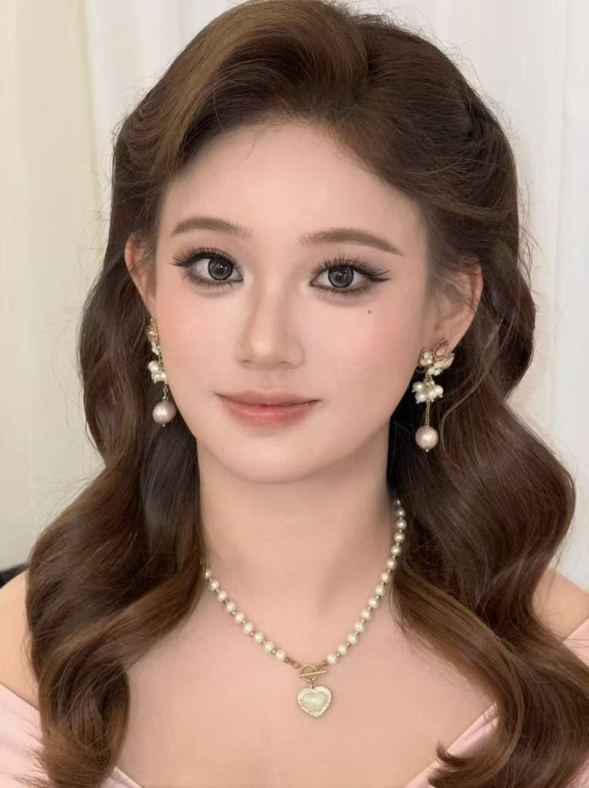

千金妆研习 · 第 1 课

1 2 3 4 5 6 7 8千金感的底气是一张"没有瑕疵"的脸：底妆哑光干净、颜色边界全部晕染柔和。任何一步画脏了，贵气立刻消失——所以我们的课从底妆开始，不从眼妆开始。
圆、大、微微下垂的眼型（幼态）+ 根根分明的长睫毛 = 洋娃娃感。眼妆占全妆六成功夫，是这个妆的"主战场"。
全脸只有灰棕 + 豆沙两个色系，没有任何一处颜色"跳出来"。贵气来自克制。
注意这 8 个模块的力气分配极不均匀：模块 1（底妆）决定成败，模块 3–5（眼妆）决定像不像，其余全是加分项。后面每节课一个模块，逐个拿下。
1 · 这个妆最核心的视觉重心在哪个部位？
2 · "大眼三件套"指的是哪一组？
3 · 这个妆的色彩特点是？
4 · 千金感底妆追求的关键词是？
去 B站搜 「千金妆 教程」，挑一个分步讲解型（边画边讲原理）的完整视频看一遍，不用跟着画——目标是验证今天拆解的 8 个模块，看真人教程里是不是每一步都能对上号。
我是你的化妆老师。任何看不懂的——术语、手法、产品、为什么这一步在前那一步在后——直接回来问我，比搜十个帖子快。